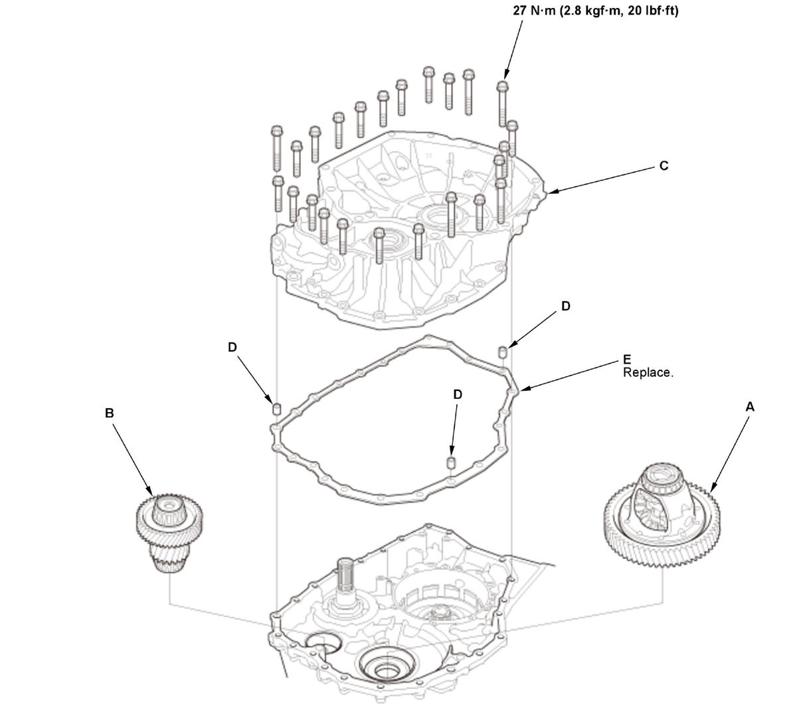

Final Drive Shaft Tapered Roller Bearing Preload Inspection (L15B7/L15BA/L15BY (CVT)): Inspection
NOTE:
- If the transmission was disassembled, the final drive shaft tapered roller bearing preload must be adjusted.
- The final drive shaft tapered roller bearing preload must be inspected and adjusted with the differential assembly. The final drive shaft tapered roller bearing preload value needs the differential carrier tapered roller bearing preload measurements. Incorrect measurements may be indicated if the differential carrier tapered roller bearing preload inspection has not been completed.
- Apply a light coat of clean transmission fluid on all parts before installation.
- Differential Carrier Tapered Roller Bearing Preload - Inspect
- Final Drive Shaft Tapered Roller Bearing Outer Race (Torque Converter Housing Side) - Install
1. Install the oil guide plate (A) and the 80 mm thrust shim (B). 2. Install the final drive shaft tapered roller bearing outer race (C) using the 15 x 135L driver handle and the 78 x 80 mm bearing driver attachment so there is no clearance between the bearing outer race, the 80 mm thrust shim, the oil guide plate, and the torque converter housing.
- Final Drive Shaft Tapered Roller Bearing Outer Race (Transmission Housing Side) - Install
1. Install the final drive shaft tapered roller bearing outer race (A) until it bottoms using the 15 x 135L driver handle and the 62 x 64 mm bearing driver attachment. - Torque Converter Housing - Install
1. Install the differential assembly (A).
Fig 1: Differential Assembly, Final Drive Shaft Assembly, Torque Converter Housing Dowel Pins, Bolts And Gasket With Torque Specifications (L15B7/L15BA/L15BY - CVT)
Courtesy of HONDA, U.S.A., INC.2. Install the final drive shaft assembly (B).
3. Install the torque converter housing (C) with the dowel pins (D) and a new gasket (E), and tighten the bolts in a crisscross pattern in at least two steps.
- Final Drive Shaft Tapered Roller Bearing Preload - Inspect
1. Rotate the differential assembly in both directions to seat the bearings using the preload inspection tool. 2. Measure the starting torque using the preload inspection tool, a torque wrench (A), and a socket (B).
NOTE: Measure the starting torque at normal room temperature in both directions.
Standard New Bearing: 6.88-27.39 N.m (70.1-279.3 kgf.cm, 60.9-242.5 lbf.in) Reused Bearing: 5.63-26.15 N.m (57.4-266.6 kgf.cm, 49.8-231.4 lbf.in) 3. If the measurement is out of the standard, remove the 80 mm thrust shim, and measure its thickness.
4. Select a new 80 mm thrust shim.
- To increase the starting torque, increase thickness of the 80 mm thrust shim.
- To decrease the starting torque, decrease the thickness of the 80 mm thrust shim.
- Changing the 80 mm thrust shim to the next size will increase or decrease the starting torque about 0.5- 0.6 N.m (5.10-6.12 kgf.cm, 3.8-4.5 lbf.in).
- Do not use more than two thrust shims to adjust the starting torque.
Type A 80 mm Thrust Shim
No. Thickness A 0.900 mm (0.03543 in) B 0.925 mm (0.03642 in) C 0.950 mm (0.03740 in) D 0.975 mm (0.03839 in) E 1.000 mm (0.03937 in) F 1.025 mm (0.04035 in) G 1.050 mm (0.04134 in) H 1.075 mm (0.04232 in) I 1.100 mm (0.04331 in) J 1.125 mm (0.04429 in) K 1.150 mm (0.04528 in) L 1.175 mm (0.04626 in) M 1.200 mm (0.04724 in) N 1.225 mm (0.04823 in) O 1.250 mm (0.04921 in) P 1.275 mm (0.05020 in) Q 1.300 mm (0.05118 in) R 1.325 mm (0.05217 in) No. Thickness S 1.350 mm (0.05315 in) T 1.375 mm (0.05413 in) U 1.400 mm (0.05512 in) V 1.425 mm (0.05610 in) W 1.450 mm (0.05709 in) X 1.475 mm (0.05807 in) Y 1.500 mm (0.05906 in) Z 1.525 mm (0.06004 in) 0A 1.550 mm (0.06102 in) 0B 1.575 mm (0.06201 in) 0C 1.600 mm (0.06299 in) 0D 1.625 mm (0.06398 in) 0E 1.650 mm (0.06496 in) 0F 1.675 mm (0.06594 in) 0G 1.700 mm (0.06693 in) 0H 1.725 mm (0.06791 in) 0I 1.750 mm (0.06890 in) 0J 1.775 mm (0.06988 in) 0K 1.800 mm (0.07087 in) 0L 1.825 mm (0.07185 in) 0M 1.850 mm (0.07283 in) Type B 80 mm Thrust Shim
No. Thickness M 1.880 mm (0.07402 in) N 1.910 mm (0.07520 in) O 1.940 mm (0.07638 in) 5. Install a selected 80 mm thrust shim, then recheck the starting torque.